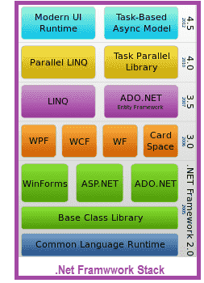

VB.NET is an update to Visual Basic that targets Microsofts .NET Framework. VB.NET has a lot of similarities to Visual Basic but also some differences. VB.NET is an object-oriented language, which supports the abstraction, encapsulation, inheritance, and polymorphism features. It is the most productive tool for rapidly creating a wide range of Windows, Web, Mobile, and Office applications built on the .NET Framework.
The Visual Basic language is designed to be human readable and accessible to everyone from novice programmers to advanced system architects. All of this is built on top of the .NET Framework, which guarantees that programs written in Visual Basic run with unsurpassed scalability and reliability. The .NET Framework provides VB.Net programmers with the ability to create fully object oriented programs (OOPs), just like the ones created using Java, C# or C++. Also programs written in VB.Net will interoperate seamlessly with programs written in any other .NET languages such as Visual C#, Visual J#, or Visual C++.
Many programmers says VB.Nets ease of use as the key to its success. Using VB.NET, you can create a wide variety of applications, such as a Console Applications, that displays its output in an MS-DOS-like window, Windows Applications that often displays a form-based interface, Web Applications, Web Services, Mobile Applications etc. I hope this site will help you to acquire the skills and knowledge necessary to develop various types of applications in VB.NET in a simplified manner rather than in a complex way.